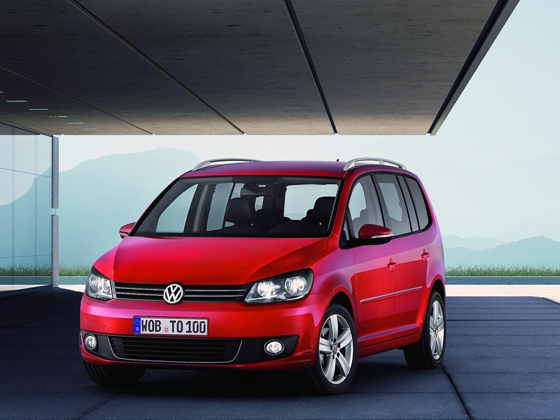
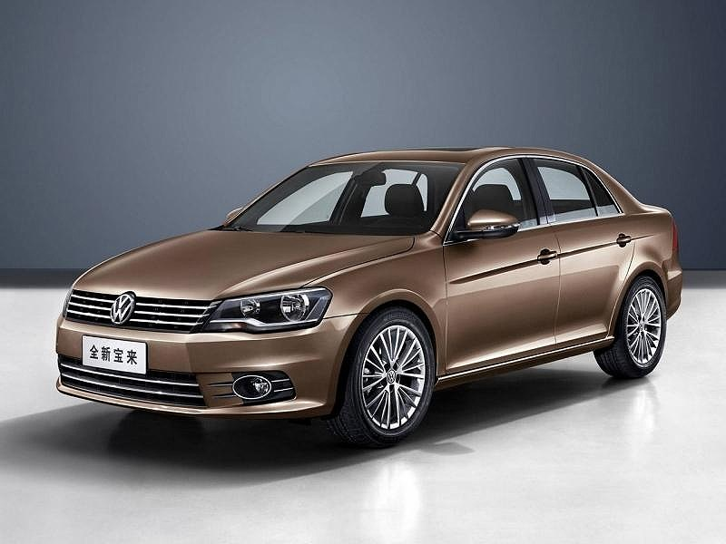
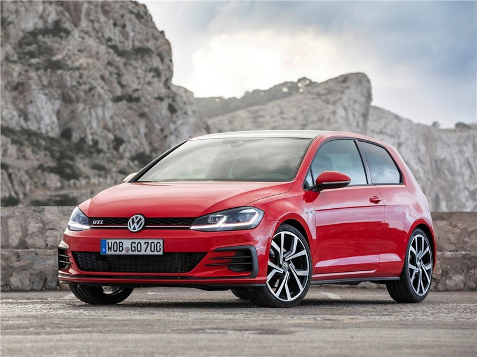
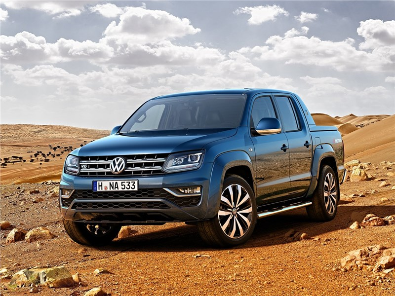

О Volkswagen
Компания Volkswagen – это немецкий автомобильный концерн, основные производственные мощности которого находятся в Вольсбурге. Первые автомобили Volkswagen сошли с конвейера в 1935 году. Ровно через 3 года началось возведение самого крупного автомобильного завода в Европе, на котором впоследствии были выпущены известные во всем мире автомобили Volkswagen Beetle. С этого момента компания начинает стремительно развиваться. В 1965 году она купила предприятие Audi у компании Daimler-Benz. Так был основан известный концерн Volkswagen-Audi или VAG. Позже завод Volkswagen, автомобили которого уже входили в 5 самых популярных в мире, расширился за счет таких известных марок, как Bentley, Skoda, SEAT и Lamborghini. 70-е годы стали самыми плодотворными для компании Volkswagen. Автомобили били все рекорды по продажам и вызывали горячие одобрение не только со стороны потребителей, но и экспертов. В тоже время специалисты фирмы разработали автомобили Volkswagen Golf, Passat и Scirocco. Новое поколение машин началось с переднеприводной модели Passat, которую мир увидел в 1973 году. Эталоном в гольф-классе (по международной классификации C-класс) стали автомобили Volkswagen Golf I, которые появились в 1974 году. Сегодня Volkswagen построил собственные заводы во многих странах мира. Он производит машины под марками Audi, SEAT, Bentley, Skoda, Lamborghini, Bugatti и, конечно же, Volkswagen – автомобили надежные, комфортные и доступные.

История
